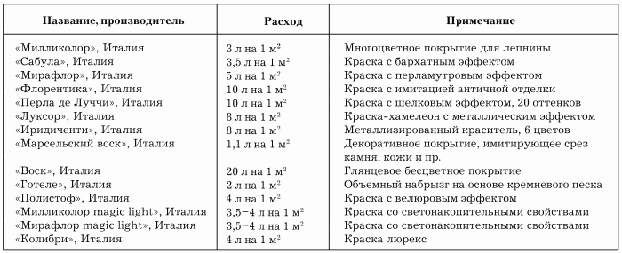

Методы декорирования лепнины.

Окрашивание – самый простой и распространенный вид отделки гипса. Окрашивание бывает традиционным и современным.
В первом случае лепнину тонируют в соответствии с цветовой гаммой интерьера.
Современные технологии позволяют использовать усовершенствованные способы покраски.
Также применяют следующие методы декорирования гипса:
– обработка воском или патиной, сохраняющими натуральный вид гипса и изменяющими в то же время его фактуру. Кроме того, обработка воском считается дополнительной защитой гипса от механических повреждений и старения;
– декоративная отделка: с помощью красителей и загустителей краски тканью или губкой можно создавать различные фактуры, например искусственный мрамор, гранит.
Эффект гранитной поверхности получается при применении так называемых мозаичных красок (иногда именуемых гранитными или многоцветными). В состав этих красок входят разноцветные пузырьки, которые при нанесении на покрытие лопаются и создают многоцветный эффект.
В зависимости от размера пузырьков такие краски имитируют гранит, велюр и др.
Мозаичные краски наносят специальным пистолетом-распылителем.
При использовании люминесцентных красок получается эффект свечения в темноте. При естественном или искусственном освещении покрытие, окрашенное такими красками, выглядит как обычно, а с наступлением темноты оно начинает светиться. В основном такие краски наносят на потолки с помощью трафаретов в виде различных рисунков, например венков или звезд.
Краски с перламутровым эффектом имеют полупрозрачную структуру. Поверхность, окрашенная данной краской, действительно напоминают перламутр. Такие краски, в зависимости от освещения и угла зрения, способны переливаться и менять цвет. Благодаря этому свойству перламутровую краску часто называют хамелеоном.
Данную краску наносят различными инструментами:
– пластиковым шпателем;
– кистью;
– губкой;
– валиком;
– пистолетом-распылителем.
Перламутровые краски смотрятся особенно эффектно, если ими отделаны детали интерьера, например карнизы.
Наиболее популярные красочные составы для лепнины представлены в табл. 3.
Таблица 3. Красочные составы для лепнины
Эффект старины получают при окрашивании гипсовой или полиуретановой лепнины. Для создания этого эффекта используют краски на основе извести типа „Артеко“. Благодаря этому на лепнине появляются различные потертости, переходы цвета и наплывы. Данную краску наносят круговыми движениями кистью с длинным ворсом. Как правило, эффект потертости появляется там, где сильнее надавливают кистью. При окрашивании рельефных поверхностей краска затекает в глубокие участки и после высыхания выглядит темнее, чем на выпуклых. Для усиления потертости выпуклые места немного протирают губкой или тряпкой, снимая часть краски. После того как краска высохнет, поверхность покрывают воском.
Эффект акварели достигается при использовании красок двух цветов. Для этого на базовый слой высохшей краски наносят краску другого цвета, после чего сразу же легкими стирающими движениями размывают краску так, чтобы местамии проступал базовый слой. Для этого используют следующие инструменты:
– кисть;
– специальный валик с кусочками замши;
– ткань;
– скомканный полиэтилен;
– губка.
В зависимости от использования того или иного инструмента меняется и фактура поверхности.
Искусственная кожа. Для получения этого эффекта на поверхность наносят основной слой краски.
После того как он окончательно высохнет, наносят второй слой и сразу же накладывают полиэтиленовую пленку, не расправляя ее. Спустя некоторое время пленку снимают, а на поверхности отпечатывается рисунок, напоминающий искусственную кожу.
Этого же эффекта можно добиться, проведя по невысохшему базовому покрытию;
– валиком, обмотанным целлофаном;
– скомканным куском замши (метод тампонирования).
Имитацию дерева получают с помощью специального валика, напоминающего бритвенный станок. Проводя им по невысохшей краске, получают рисунок, имитирующий структуру древесины.
Для имитации мрамора на высохшее покрытие наносят небольшие пятна краски более темного цвета, после чего соединяют их гусиным пером. В результате получают покрытие с имитацией мраморного рисунка с характерными прожилками.